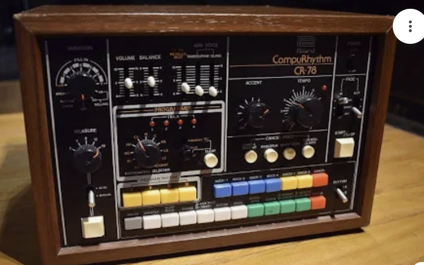
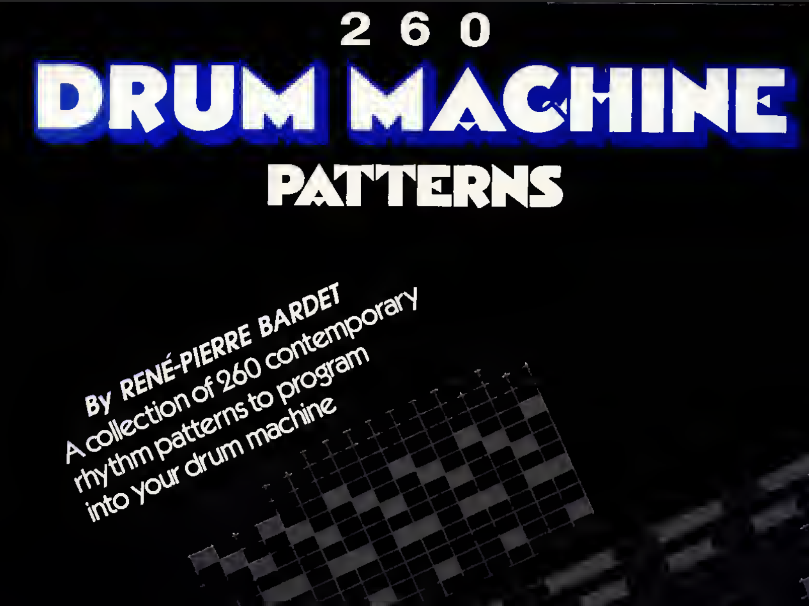

You could call it procrastination
But I like making software to make music. Usually, I spend much longer making the tool than actually making music. Ah well, that’s beside the point, I really enjoy building these tools. It’s my guilty pleasure.
Anyway, enough excuses: what is this thing?
I really love the sound of the Roland CompuRhythm 78.

So that’s where this started.
This little tool began as a rhythm grid, then I decided to add as many of those ultra-cheesy predefined patterns as I could — bossa nova, swing, cha-cha, you name it. It takes me back to playing on my grandmother’s organ back in the 80s.

At some point, I figured I could also add a melody part: so by hooking up a MIDI keyboard (or using your computer keyboard), you get a few channels for bass, melody, and whatever else you want.
Then it grew into something where you can organize these little parts better, to make things longer than just one or two bars.
Finally, I added some effects: warble/flutter and an equalizer.
And the name is Jizzjazztoo.
“JizzJazz” comes from Mac DeMarco’s description of a kind of simple, jazzy, lo-fi music made from looping mellow grooves; exactly what this tool is designed for. There was an earlier version of this tool called Jizzjazz. That one was less useful, though, so I decided to make it better.
Maybe I should post a video of it in action. Sheesh, should've thought of that before all this talking. Anyway see you later! Have a good day!